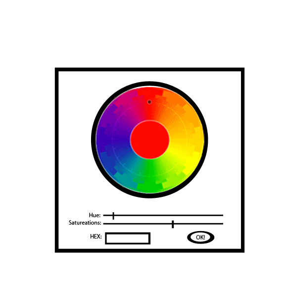

The Color Palette is initialized anytime a user wants to pick a color for another tool such as a line or a shape. When the color palette is up the user can choose from an array of colors in the top section, by clicking a color in the circle. Below the circle are advanced controls for hue and saturation, using the sliders. The user also has the option to enter a HEX value to quickly choose a specific color. The current color choice is displayed in the middle. When the user is satisfied with the color they click 'OK!'.

Figure 1: Color Palette Controls